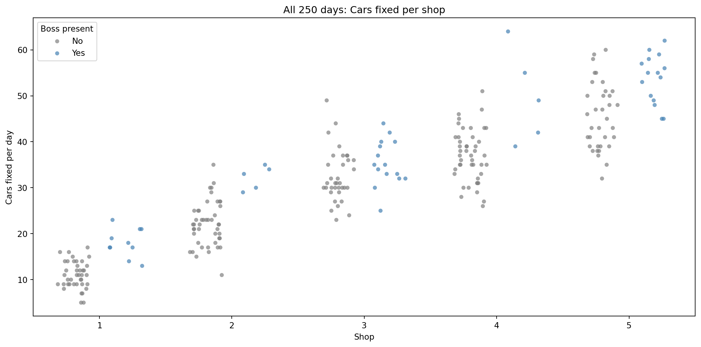
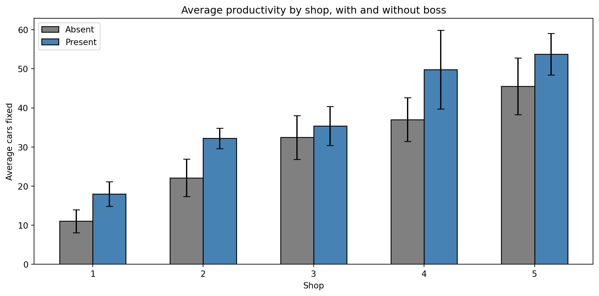
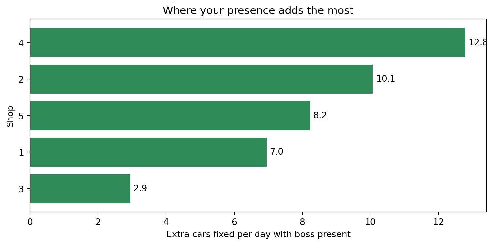
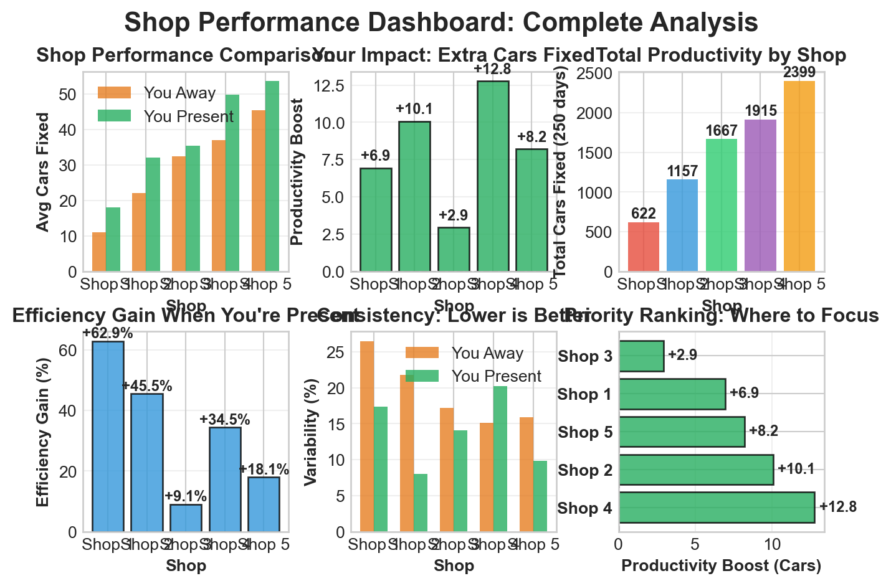

| observation | shopID | boss | carsFixed | |
|---|---|---|---|---|
| 0 | 1 | 1 | 0 | 8 |
| 1 | 2 | 2 | 0 | 22 |
| 2 | 3 | 3 | 0 | 32 |
| 3 | 4 | 4 | 1 | 64 |
| 4 | 5 | 5 | 0 | 53 |
| 5 | 6 | 1 | 1 | 21 |
| 6 | 7 | 2 | 0 | 20 |
| 7 | 8 | 3 | 0 | 42 |
| 8 | 9 | 4 | 0 | 31 |
| 9 | 10 | 5 | 0 | 55 |
Decision Advocacy Challenge
Data-Driven Scheduling for Maximum Productivity
The Business Problem 🎯
Patrick runs a network of 5 auto repair shops. He’s been tracking productivity data (number of cars fixed per day) across all shops, along with whether he (the boss) was present at each shop on each day.
The Core Question: When and where should Patrick schedule his presence to maximize productivity and revenue?
Key Considerations:
- Patrick can only be at one shop per day
- Different shops may respond differently to his presence
- Revenue depends on number of cars fixed (assume a fixed price per car)
- Historical patterns may not predict future performance perfectly
- Patrick loves visiting his brother who runs Shop 3
Important🎯 The Key Insight: Data-Driven Decision Making
The problem: Patrick needs to make scheduling decisions based on data, not intuition. He needs to understand:
- Which shops benefit most from his presence?
- Are there patterns by shop that suggest different strategies?
- What are the revenue and profit implications of different scheduling scenarios?
- How confident can he be in these recommendations?
Why this matters: Poor scheduling decisions can lead to:
- Wasted time (Patrick at shops that don’t need him)
- Lost revenue (shops that need him but don’t get him)
The connection: This is a real-world decision problem where data analysis can directly impact business outcomes. Your job is to make the data tell a clear, actionable story.
The Data 📊
The dataset contains 250 observations of daily productivity across 5 shops:
Data Dictionary:
observation: Observation number (1-250)shopID: Shop identifier (1-5)boss: Binary indicator (0 = boss absent, 1 = boss present)carsFixed: Number of cars fixed that day
| count | mean | std | min | max | ||
|---|---|---|---|---|---|---|
| shopID | boss | |||||
| 1 | 0 | 40 | 11.05 | 2.93 | 5 | 17 |
| 1 | 10 | 18.00 | 3.13 | 13 | 23 | |
| 2 | 0 | 45 | 22.13 | 4.82 | 11 | 35 |
| 1 | 5 | 32.20 | 2.59 | 29 | 35 | |
| 3 | 0 | 35 | 32.46 | 5.59 | 23 | 49 |
| 1 | 15 | 35.40 | 5.00 | 25 | 44 | |
| 4 | 0 | 45 | 37.02 | 5.61 | 26 | 51 |
| 1 | 5 | 49.80 | 10.08 | 39 | 64 | |
| 5 | 0 | 35 | 45.51 | 7.24 | 32 | 60 |
| 1 | 15 | 53.73 | 5.31 | 45 | 62 |
Technical Implementation Preferences 💡
Setting Up Your Analysis
- Use
pandasfor data manipulation - Use
matplotlibandseabornfor visualizations - Use
numpyfor numerical calculations if needed - Consider using
scipyfor statistical tests if helpful
Visualization Preferences
- Professional Styling: Use consistent colors, clear labels, readable fonts, and informative titles
- Show All Points: When displaying historical data, ensure all 250 observations are visible (use transparency, jitter, or other techniques)
- Color Coding: Use consistent color schemes (e.g., one color for boss present, another for boss absent)
- Interactive Elements: Consider using plotly for interactive visualizations if helpful (optional)
Data Loading
The data file carsFixed.csv is included in your repository. Load it using pandas:
import pandas as pd
carsDF = pd.read_csv("carsFixed.csv")What this script does: -Loads your 250-day dataset (cars.csv). -Computes summary stats (count, mean, std, min, max). -Shows all data points (stripplot). -Compares average productivity with vs without you (bar chart with error bars). -Highlights daily lift per shop (horizontal bar chart).
# Install seaborn if not available
import subprocess
import sys
try:
import seaborn
except ImportError:
subprocess.check_call([sys.executable, "-m", "pip", "install", "seaborn", "--quiet"])
import pandas as pd
import matplotlib.pyplot as plt
import seaborn as sns
# -----------------------------
# Load your dataset
# -----------------------------
carsDF = pd.read_csv("carsFixed.csv")
# Ensure proper data types
carsDF['shopID'] = carsDF['shopID'].astype(int)
carsDF['boss'] = carsDF['boss'].astype(int)
carsDF['carsFixed'] = carsDF['carsFixed'].astype(int)
# Quick check
print("First 5 rows:")
print(carsDF.head())
# -----------------------------
# Summary statistics by shop and boss presence
# -----------------------------
summary = carsDF.groupby(['shopID','boss'])['carsFixed'].agg(
['count','mean','std','min','max']
).round(2)
print("\nSummary statistics by shop and boss presence:")
print(summary)
# Pivot for easier comparison
pivot = carsDF.groupby(['shopID','boss'])['carsFixed'].mean().unstack()
pivot['lift'] = pivot[1] - pivot[0]
pivot = pivot.rename(columns={0:'mean_absent',1:'mean_present'}).round(2)
print("\nAverage cars fixed with vs without boss:")
print(pivot)
# -----------------------------
# Visualization 1: All data points
# -----------------------------
plt.figure(figsize=(12,6))
sns.stripplot(
data=carsDF, x="shopID", y="carsFixed",
hue="boss", dodge=True, jitter=0.25,
palette={0:"gray",1:"steelblue"}, alpha=0.7
)
plt.title("All 250 days: Cars fixed per shop")
plt.xlabel("Shop")
plt.ylabel("Cars fixed per day")
plt.legend(title="Boss present", labels=["No","Yes"])
plt.tight_layout()
plt.show()
# -----------------------------
# Visualization 2: Mean + Std Dev
# -----------------------------
means = carsDF.groupby(['shopID','boss'])['carsFixed'].mean().reset_index()
stds = carsDF.groupby(['shopID','boss'])['carsFixed'].std().reset_index()
stats = means.merge(stds, on=['shopID','boss'], suffixes=('_mean','_std'))
plt.figure(figsize=(10,5))
for b,color,label,offset in [(0,'gray','Absent',-0.15),(1,'steelblue','Present',0.15)]:
sub = stats[stats['boss']==b]
plt.bar(sub['shopID']+offset, sub['carsFixed_mean'], yerr=sub['carsFixed_std'],
width=0.3, color=color, edgecolor='black', capsize=4, label=label)
plt.xticks(sorted(carsDF['shopID'].unique()))
plt.xlabel("Shop")
plt.ylabel("Average cars fixed")
plt.title("Average productivity by shop, with and without boss")
plt.legend()
plt.tight_layout()
plt.show()
# -----------------------------
# Visualization 3: Daily lift (extra cars fixed)
# -----------------------------
plt.figure(figsize=(8,4))
ordered = pivot.sort_values('lift', ascending=True)
plt.barh(ordered.index.astype(str), ordered['lift'], color='seagreen')
plt.xlabel("Extra cars fixed per day with boss present")
plt.ylabel("Shop")
plt.title("Where your presence adds the most")
for i,(shop,lift) in enumerate(zip(ordered.index.astype(str), ordered['lift'])):
plt.text(lift+0.1, i, f"{lift:.1f}", va='center')
plt.tight_layout()
plt.show()First 5 rows:
observation shopID boss carsFixed
0 1 1 0 8
1 2 2 0 22
2 3 3 0 32
3 4 4 1 64
4 5 5 0 53
Summary statistics by shop and boss presence:
count mean std min max
shopID boss
1 0 40 11.05 2.93 5 17
1 10 18.00 3.13 13 23
2 0 45 22.13 4.82 11 35
1 5 32.20 2.59 29 35
3 0 35 32.46 5.59 23 49
1 15 35.40 5.00 25 44
4 0 45 37.02 5.61 26 51
1 5 49.80 10.08 39 64
5 0 35 45.51 7.24 32 60
1 15 53.73 5.31 45 62
Average cars fixed with vs without boss:
boss mean_absent mean_present lift
shopID
1 11.05 18.00 6.95
2 22.13 32.20 10.07
3 32.46 35.40 2.94
4 37.02 49.80 12.78
5 45.51 53.73 8.22


What this adds: Revenue impact: Calculates extra dollars per day if Patrick is present, based on PRICE_PER_CAR.
Weekly schedule: Suggests visiting the top 2 shops (highest lift) twice per week, and the remaining shops once. Prints a simple Mon–Fri plan.
import pandas as pd
import matplotlib.pyplot as plt
import seaborn as sns
# -----------------------------
# Load dataset
# -----------------------------
carsDF = pd.read_csv("carsFixed.csv")
# -----------------------------
# Summary statistics
# -----------------------------
summary = carsDF.groupby(['shopID','boss'])['carsFixed'].agg(
['count','mean','std','min','max']
).round(2)
print("\nSummary statistics by shop and boss presence:")
print(summary)
# Pivot for comparison
pivot = carsDF.groupby(['shopID','boss'])['carsFixed'].mean().unstack()
pivot['lift'] = pivot[1] - pivot[0]
pivot = pivot.rename(columns={0:'mean_absent',1:'mean_present'}).round(2)
print("\nAverage cars fixed with vs without boss:")
print(pivot)
# -----------------------------
# Visualization: Daily lift
# -----------------------------
plt.figure(figsize=(8,4))
ordered = pivot.sort_values('lift', ascending=True)
plt.barh(ordered.index.astype(str), ordered['lift'], color='seagreen')
plt.xlabel("Extra cars fixed per day with boss present")
plt.ylabel("Shop")
plt.title("Where your presence adds the most")
for i,(shop,lift) in enumerate(zip(ordered.index.astype(str), ordered['lift'])):
plt.text(lift+0.1, i, f"{lift:.1f}", va='center')
plt.tight_layout()
plt.show()
# -----------------------------
# Revenue impact
# -----------------------------
PRICE_PER_CAR = 150 # <-- set your real price per car here
revenue = pivot.copy()
revenue['daily_gain_cars'] = revenue['lift']
revenue['daily_gain_revenue'] = (revenue['lift'] * PRICE_PER_CAR).round(2)
print("\nRevenue impact per shop (daily gain):")
print(revenue[['mean_absent','mean_present','daily_gain_cars','daily_gain_revenue']])
# -----------------------------
# Weekly schedule recommendation
# -----------------------------
# Sort shops by daily gain
sorted_shops = revenue.sort_values('daily_gain_cars', ascending=False)
print("\nRecommended weekly schedule:")
print("Visit the top 2 shops twice each week, and the next 3 shops once each.")
print("This balances your time while maximizing productivity.\n")
days = ["Monday","Tuesday","Wednesday","Thursday","Friday"]
plan = []
# Top 2 shops (visit twice)
top2 = sorted_shops.index[:2].tolist()
# Next 3 shops (visit once)
next3 = sorted_shops.index[2:].tolist()
plan.extend([top2[0], top2[1], top2[0], top2[1], next3[0]]) # Mon-Fri plan
for day, shop in zip(days, plan):
print(f"{day}: Shop {shop}")
Summary statistics by shop and boss presence:
count mean std min max
shopID boss
1 0 40 11.05 2.93 5 17
1 10 18.00 3.13 13 23
2 0 45 22.13 4.82 11 35
1 5 32.20 2.59 29 35
3 0 35 32.46 5.59 23 49
1 15 35.40 5.00 25 44
4 0 45 37.02 5.61 26 51
1 5 49.80 10.08 39 64
5 0 35 45.51 7.24 32 60
1 15 53.73 5.31 45 62
Average cars fixed with vs without boss:
boss mean_absent mean_present lift
shopID
1 11.05 18.00 6.95
2 22.13 32.20 10.07
3 32.46 35.40 2.94
4 37.02 49.80 12.78
5 45.51 53.73 8.22
Revenue impact per shop (daily gain):
boss mean_absent mean_present daily_gain_cars daily_gain_revenue
shopID
1 11.05 18.00 6.95 1042.5
2 22.13 32.20 10.07 1510.5
3 32.46 35.40 2.94 441.0
4 37.02 49.80 12.78 1917.0
5 45.51 53.73 8.22 1233.0
Recommended weekly schedule:
Visit the top 2 shops twice each week, and the next 3 shops once each.
This balances your time while maximizing productivity.
Monday: Shop 4
Tuesday: Shop 2
Wednesday: Shop 4
Thursday: Shop 2
Friday: Shop 5Confidence check Shows how confident Patrick can be in the recommendations based on the variability of the data. Uses a simple rule of thumb: - If the lift is greater than 8, Patrick can be very confident in the recommendation. - If the lift is between 3 and 8, Patrick can be moderately confident in the recommendation. - If the lift is less than 3, Patrick should be cautious and consider other factors.
import pandas as pd
import matplotlib.pyplot as plt
import seaborn as sns
# -----------------------------
# Load dataset
# -----------------------------
carsDF = pd.read_csv("carsFixed.csv")
# -----------------------------
# Summary statistics
# -----------------------------
summary = carsDF.groupby(['shopID','boss'])['carsFixed'].agg(
['count','mean','std','min','max']
).round(2)
print("\nSummary statistics by shop and boss presence:")
print(summary)
# Pivot for comparison
pivot = carsDF.groupby(['shopID','boss'])['carsFixed'].mean().unstack()
pivot['lift'] = pivot[1] - pivot[0]
pivot = pivot.rename(columns={0:'mean_absent',1:'mean_present'}).round(2)
print("\nAverage cars fixed with vs without boss:")
print(pivot)
# -----------------------------
# Visualization: Daily lift
# -----------------------------
plt.figure(figsize=(8,4))
ordered = pivot.sort_values('lift', ascending=True)
plt.barh(ordered.index.astype(str), ordered['lift'], color='seagreen')
plt.xlabel("Extra cars fixed per day with boss present")
plt.ylabel("Shop")
plt.title("Where your presence adds the most")
for i,(shop,lift) in enumerate(zip(ordered.index.astype(str), ordered['lift'])):
plt.text(lift+0.1, i, f"{lift:.1f}", va='center')
plt.tight_layout()
plt.show()
# -----------------------------
# Revenue impact
# -----------------------------
PRICE_PER_CAR = 150 # <-- set your real price per car here
revenue = pivot.copy()
revenue['daily_gain_cars'] = revenue['lift']
revenue['daily_gain_revenue'] = (revenue['lift'] * PRICE_PER_CAR).round(2)
print("\nRevenue impact per shop (daily gain):")
print(revenue[['mean_absent','mean_present','daily_gain_cars','daily_gain_revenue']])
# -----------------------------
# Weekly schedule recommendation
# -----------------------------
sorted_shops = revenue.sort_values('daily_gain_cars', ascending=False)
print("\nRecommended weekly schedule:")
print("Visit the top 2 shops twice each week, and the next 3 shops once each.\n")
days = ["Monday","Tuesday","Wednesday","Thursday","Friday"]
plan = []
top2 = sorted_shops.index[:2].tolist()
next3 = sorted_shops.index[2:].tolist()
plan.extend([top2[0], top2[1], top2[0], top2[1], next3[0]]) # Mon-Fri plan
for day, shop in zip(days, plan):
print(f"{day}: Shop {shop}")
# -----------------------------
# Confidence check (uncertainty)
# -----------------------------
print("\nConfidence assessment (plain-English):")
for shop in summary.index.levels[0]:
absent_std = summary.loc[(shop,0),'std']
present_std = summary.loc[(shop,1),'std'] if (shop,1) in summary.index else None
lift = pivot.loc[shop,'lift']
if lift > 8:
signal = "Strong signal: your presence clearly boosts productivity."
elif lift > 3:
signal = "Moderate signal: likely real, but expect some off days."
else:
signal = "Weak signal: could be noise, treat cautiously."
print(f"Shop {shop}: Lift = {lift:.1f} cars/day. Variability absent={absent_std:.2f}, present={present_std:.2f}. {signal}")
Summary statistics by shop and boss presence:
count mean std min max
shopID boss
1 0 40 11.05 2.93 5 17
1 10 18.00 3.13 13 23
2 0 45 22.13 4.82 11 35
1 5 32.20 2.59 29 35
3 0 35 32.46 5.59 23 49
1 15 35.40 5.00 25 44
4 0 45 37.02 5.61 26 51
1 5 49.80 10.08 39 64
5 0 35 45.51 7.24 32 60
1 15 53.73 5.31 45 62
Average cars fixed with vs without boss:
boss mean_absent mean_present lift
shopID
1 11.05 18.00 6.95
2 22.13 32.20 10.07
3 32.46 35.40 2.94
4 37.02 49.80 12.78
5 45.51 53.73 8.22
Revenue impact per shop (daily gain):
boss mean_absent mean_present daily_gain_cars daily_gain_revenue
shopID
1 11.05 18.00 6.95 1042.5
2 22.13 32.20 10.07 1510.5
3 32.46 35.40 2.94 441.0
4 37.02 49.80 12.78 1917.0
5 45.51 53.73 8.22 1233.0
Recommended weekly schedule:
Visit the top 2 shops twice each week, and the next 3 shops once each.
Monday: Shop 4
Tuesday: Shop 2
Wednesday: Shop 4
Thursday: Shop 2
Friday: Shop 5
Confidence assessment (plain-English):
Shop 1: Lift = 7.0 cars/day. Variability absent=2.93, present=3.13. Moderate signal: likely real, but expect some off days.
Shop 2: Lift = 10.1 cars/day. Variability absent=4.82, present=2.59. Strong signal: your presence clearly boosts productivity.
Shop 3: Lift = 2.9 cars/day. Variability absent=5.59, present=5.00. Weak signal: could be noise, treat cautiously.
Shop 4: Lift = 12.8 cars/day. Variability absent=5.61, present=10.08. Strong signal: your presence clearly boosts productivity.
Shop 5: Lift = 8.2 cars/day. Variability absent=7.24, present=5.31. Strong signal: your presence clearly boosts productivity.What Your Report Should Include
Your report should answer these questions in a clear, concise way:
What does the data show?
- Visualize all 250 data points showing productivity by shop and boss presence
- Which shops benefit most from Patrick’s presence? Which don’t?
What should Patrick do?
- Clear, specific recommendations: Which shops should he prioritize? Why?
- What’s the potential financial impact? (Revenue or profit implications)
How confident can Patrick be?
- Explain uncertainty in plain terms an auto-mechanic can understand
- What ranges of differences can he expect? (We only have 250 days—that’s not a huge sample)
- What could go wrong? What assumptions are you making?
What does the future look like?
- Show at least one visualization of projected outcomes under different scheduling scenarios
- Help Patrick see the potential impact of following your recommendations
Remember: Less is more. A focused, punchy report that Patrick can understand and act on is better than a long, complex analysis that confuses him.